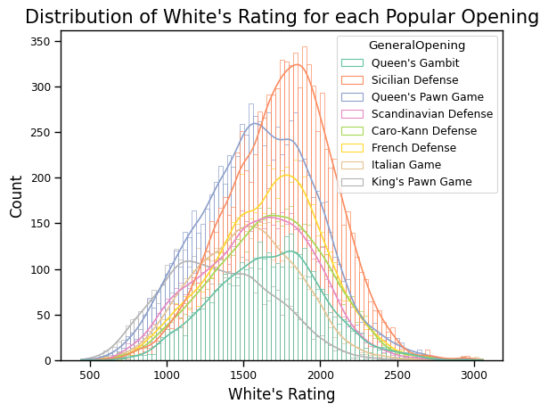
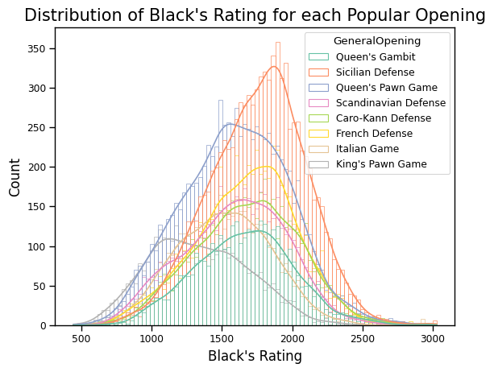
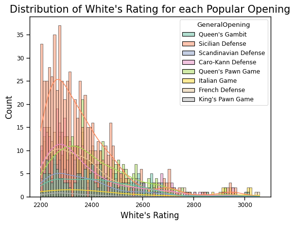
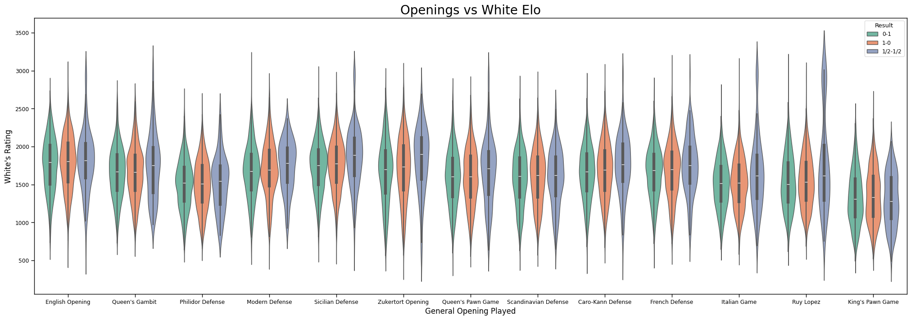
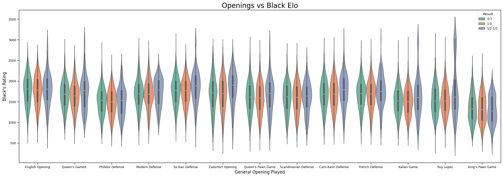

Chess Openings Popularity
Background Information
The dataset is a compilation of standard chess games played on Lichess, a popular chess website, posted on the Lichess official database. It contains over 7 billion rows, where each row represents a single chess game, dating from January, 2013 to September, 2025.
I chose a random subset of 100000 chess games on December 28th, 2023 from HuggingFace.co.
Which openings are popular, accounting for rating?


For players rated from below 500 to 900, King's Pawn Game is the most popular opening. For players rated 900 to 1600, Queen's Pawn Game is the most popular, and from 1600 upwards, the Sicilian is by far the most used.
Zooming in on higher-rated players, we see:

Although the Sicilian is the most popular opening throughout, its lead diminishes for very high rating. For example, the Queen's Pawn Game overtakes the Sicilian in popularity briefly around 2600-2800, and other openings follow closely. This suggests that higher rated players are more willing to play a variety of openings, since they probably studied more as well.


However, if we focus on the rating distribution for the top 13 popular openings, we can see that the Ruy Lopez is actually played significantly by 3000+ rated players.
Key Takeaways
The King's Pawn Game is the most popular opening for low rated players.
The
For very high rated players though, at 2800+ online, a variety of openings are played, and the